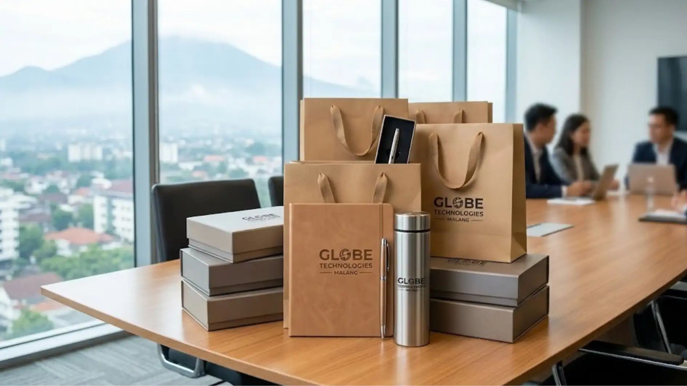
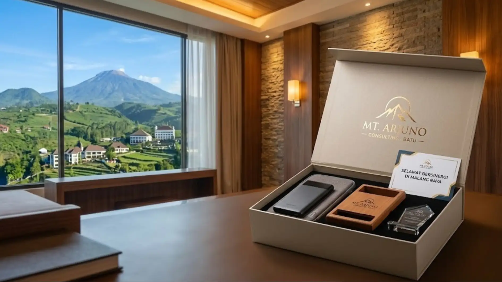

Paket Souvenir Kantor Premium Berisi Produk Fungsional Melayani Jakarta, Tangerang, Bekasi, dan Sekitarnya
 Indriana Safitri (iin)
1 Agustus 2026
5 Menit Baca
Indriana Safitri (iin)
1 Agustus 2026
5 Menit Baca

Paket souvenir kantor premium fungsional adalah kombinasi beberapa produk kebutuhan kerja sehari-hari yang dikemas dalam satu paket, dirancang agar relevan dengan kebutuhan perusahaan di wilayah Jakarta, Tangerang, Bekasi, dan area sekitarnya. Jakarta sebagai pusat bisnis nasional memiliki aktivitas korporat yang tinggi, sehingga kebutuhan souvenir yang praktis dan fungsional menjadi prioritas utama.
Paket souvenir kantor premium fungsional adalah kombinasi beberapa produk kebutuhan kerja sehari-hari yang dikemas dalam satu paket, dirancang agar relevan dengan kebutuhan perusahaan di wilayah Jakarta, Tangerang, Bekasi, dan area sekitarnya. Paket fungsional umumnya berisi kombinasi alat tulis, drinkware, dan aksesoris kerja dalam satu kemasan. Kebutuhan souvenir di wilayah Jabodetabek sering dipengaruhi oleh tingginya aktivitas korporat dan dinamisnya dunia bisnis di ibu kota. Distribusi souvenir untuk area Jakarta, Tangerang, Bekasi, dan sekitarnya perlu memperhitungkan mobilitas tinggi dan padatnya lalu lintas di wilayah tersebut.
Jakarta sebagai pusat bisnis dan pemerintahan nasional memiliki aktivitas korporat yang sangat tinggi sepanjang tahun, mulai dari rapat tahunan perusahaan, seminar industri, hingga acara peluncuran produk berskala nasional. Menurut data Badan Pusat Statistik Provinsi DKI Jakarta tahun 2023, Jakarta merupakan kota dengan jumlah perusahaan dan institusi terbanyak di Indonesia, dengan lebih dari 1,2 juta unit usaha yang tersebar di berbagai sektor, yang turut mendukung tingginya permintaan souvenir korporat di wilayah ini.
- Apa Isi Umum Paket Souvenir Kantor Premium Fungsional?
- Mengapa Paket Souvenir Perlu Disesuaikan dengan Kebutuhan Wilayah?
- Apa yang Perlu Diperhatikan Saat Memesan Souvenir untuk Area Jakarta, Tangerang, Bekasi, dan Sekitarnya?
- Bagaimana Skala Paket Souvenir Dapat Disesuaikan dengan Jenis Acara?
- Kesimpulan
- FAQ
Apa Isi Umum Paket Souvenir Kantor Premium Fungsional?
Isi umum paket souvenir kantor premium fungsional biasanya terdiri dari kombinasi alat tulis, drinkware, dan satu produk pelengkap seperti tas kecil atau aksesoris kerja, dikemas dalam satu kemasan yang konsisten dengan identitas brand.
Kombinasi paling umum terdiri dari pulpen custom, notebook, dan tumbler yang dikemas dalam paper bag atau box branding. Kombinasi ini dipilih karena mencakup kebutuhan dasar aktivitas kerja sekaligus memberikan variasi produk dalam satu paket.

Untuk kebutuhan yang lebih formal, paket dapat ditambahkan dengan produk seperti tas laptop kecil, organizer meja, atau power bank ringan, tergantung pada anggaran dan tujuan acara.
Beberapa perusahaan juga menambahkan elemen yang mencerminkan gaya hidup urban Jakarta, misalnya produk dengan desain minimalis modern atau kemasan yang praktis untuk mobilitas tinggi, terutama untuk acara yang melibatkan peserta dari berbagai wilayah di Jabodetabek.
Mengapa Paket Souvenir Perlu Disesuaikan dengan Kebutuhan Wilayah?
Paket souvenir perlu disesuaikan dengan kebutuhan wilayah karena karakter penerima, sektor usaha dominan, dan konteks acara di setiap daerah dapat berbeda, sehingga produk yang relevan juga berbeda.
Jakarta Pusat (Sektor Korporat & Perkantoran)
Di wilayah Jakarta Pusat yang menjadi pusat bisnis dan perkantoran, kebutuhan souvenir sering terkait dengan acara formal seperti rapat tahunan, seminar korporat, atau kunjungan mitra bisnis, sehingga produk seperti notebook premium, pulpen eksklusif, dan tumbler branded menjadi pilihan yang relevan.
Jakarta Selatan (Sektor Startup & Kreatif)
Di wilayah Jakarta Selatan yang dikenal dengan ekosistem startup dan industri kreatif yang berkembang pesat, kebutuhan souvenir kerap mengarah pada produk yang modern, fungsional, dan memiliki nilai estetika tinggi, seperti power bank custom, wireless charger, atau produk dengan desain minimalis kekinian.
Tangerang & Bekasi (Kawasan Industri)
Di wilayah Tangerang dan Bekasi yang mencakup kawasan industri dan manufaktur, kebutuhan souvenir sering bersifat praktis dengan volume besar, mengingat banyaknya acara gathering karyawan maupun kunjungan industri yang rutin diselenggarakan di kawasan tersebut.
Apa yang Perlu Diperhatikan Saat Memesan Souvenir untuk Area Jakarta, Tangerang, Bekasi, dan Sekitarnya?
Hal yang perlu diperhatikan saat memesan souvenir untuk area Jakarta, Tangerang, Bekasi, dan sekitarnya meliputi estimasi waktu produksi, metode distribusi, serta koordinasi kebutuhan custom logo sesuai identitas perusahaan.
1. Estimasi Waktu Produksi
Estimasi waktu produksi perlu diperhitungkan sejak awal, terutama untuk kebutuhan custom seperti cetak logo atau kemasan khusus, agar tidak terjadi keterlambatan mendekati jadwal acara. Di Jakarta, banyak acara bersifat mendadak dengan waktu persiapan terbatas, sehingga kecepatan produksi menjadi faktor penting.
2. Metode Distribusi di Jabodetabek
Metode distribusi juga perlu dipertimbangkan, terutama jika penerima souvenir tersebar di beberapa lokasi berbeda dalam wilayah Jabodetabek. Kemacetan lalu lintas yang menjadi ciri khas Jakarta perlu diantisipasi dengan perencanaan pengiriman yang matang.
3. Koordinasi Custom Logo
Koordinasi kebutuhan custom logo sebaiknya dilakukan di awal proses pemesanan, termasuk penyesuaian warna dan ukuran logo pada masing-masing jenis produk, agar hasil akhir tetap konsisten di seluruh item dalam paket.
Bagaimana Skala Paket Souvenir Dapat Disesuaikan dengan Jenis Acara?
Skala paket souvenir dapat disesuaikan dengan jenis acara melalui penyesuaian jumlah item dalam paket, tingkat kompleksitas kemasan, dan jenis produk yang dipilih sesuai formalitas acara.
Acara Internal (Rapat Kerja Rutin)
Untuk kebutuhan internal seperti rapat kerja rutin, paket sederhana berisi satu hingga dua item sudah cukup memadai, misalnya kombinasi notebook dan pulpen custom dalam kemasan sederhana.
Acara Menengah (Gathering/Pelatihan)
Untuk acara berskala menengah seperti gathering karyawan atau pelatihan, paket dapat ditingkatkan menjadi tiga item dengan kemasan yang lebih rapi, misalnya kombinasi tumbler, notebook, dan aksesoris kecil.
Acara Formal (Seminar/Kunjungan Instansi)
Untuk acara formal seperti seminar nasional atau kunjungan instansi, paket dapat dilengkapi dengan produk yang lebih eksklusif seperti tas kerja atau organizer, dikemas dalam box branding yang mencerminkan identitas perusahaan secara lebih kuat.
Butuh Paket Souvenir untuk Perusahaan di Jakarta?
Konsultasikan kebutuhan paket souvenir kantor premium fungsional untuk wilayah Jakarta, Tangerang, Bekasi, dan sekitarnya dengan tim kami.
Konsultasi SekarangKesimpulan
Paket souvenir kantor premium fungsional memberikan solusi praktis bagi perusahaan di wilayah Jakarta, Tangerang, Bekasi, dan sekitarnya karena mencakup kebutuhan kerja sehari-hari sekaligus mempertimbangkan tingginya mobilitas dan aktivitas bisnis di ibu kota. Penyesuaian isi paket, skala acara, dan metode distribusi menjadi kunci utama agar souvenir tetap relevan dan tepat waktu sesuai jadwal acara perusahaan.
FAQ Seputar Paket Souvenir Kantor Premium Jakarta